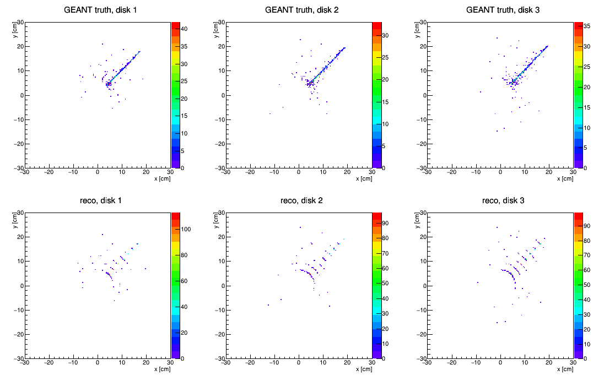
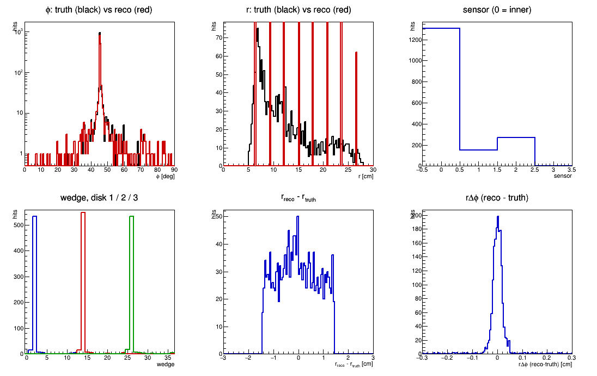

← StFstSlowSimMaker · FST real-data clusters · the original 45° test (FTT) · StFttSimHitMaker
fzin y2024 agml usexgeom sdt20220401 fstDb fstSlowSim fstRawHit fstCluster fstHit
MakeEvent StEvent McEvent ReverseField bigbig
The generated φ is the φ at the vertex. The electron is charged and bends over the 150–180 cm out to the FST, so the arrival φ has real tails and hits land in several wedges — 8 or 9 per disk here. That is physics, not a defect: the GEANT truth (black, first QA panel) shows the identical spread. A naive "all hits must be in one wedge" test would fail for entirely the wrong reason.
So the wedge test below is per hit, against that hit's own truth φ.
| quantity | value | expected |
|---|---|---|
| GEANT FST hits | 1869 | — |
| → sim raw hits | 1866 | 3 outside the active 5–28 cm |
| → StFstHits | 1724 | see note below |
| φ mean, truth | 45.826° | agree |
| φ mean, reco | 45.832° | |
| r mean, truth | 12.668 cm | agree |
| r mean, reco | 12.764 cm | |
| dominant wedge, disk 1 / 2 / 3 | 2 / 14 / 26 | 2 / 14 / 26 — OK |
| reco wedge ≠ truth-φ wedge | 2 / 1724 = 0.12% | 0, up to boundary cases |
| dr mean | −0.0157 cm | 0 |
| dr RMS | 0.7957 cm | 0.830 (strip quantization) |
| rΔφ mean | +0.0014 cm | 0 |
| rΔφ RMS | 0.0378 cm | small |
| sensor split, inner / outer1 / outer2 | 1305 / 151 / 268 | — |
The 0.12% wedge mismatch is 2 hits out of 1724, both consistent with a track arriving within a strip-width of a wedge boundary, where the truth φ and the assigned strip fall on opposite sides. A wedge-numbering error would give a large fraction, not 2 hits.
rΔφ RMS is 0.0378 cm here versus 0.084 cm in the mixed-sample closure test. The improvement is expected and is not a better detector: with one isolated track there is no truth-matching ambiguity, so the tail that inflated the mixed-sample number is simply absent.
On 1866 raw hits → 1724 hits. The 7.6% is not inefficiency in the maker. Raw hits that land on the same strip have their charge summed into one channel, and the cluster maker merges everything in one (sensor, phiStrip) cell into a single cluster regardless of r adjacency — so two GEANT hits in the same phi strip but different r strips become one hit, placed at the outer strip. That is the adjacency-free merge and the max-r rule operating, now visible in MC for the first time. 500 single-electron events give ~3.7 FST hits per event rather than 3, so there are secondaries to merge.
 Top: GEANT truth x-y per disk — a clean 45° ray. Bottom: reconstructed — the same ray, broken into concentric arcs at the 8 discrete strip radii. Fine in φ (0.234°), coarse in r (2.875 cm): exactly the FST segmentation. |
 φ truth (black) vs reco (red) — overlaid, including the bending tails. r truth (black, smooth) vs reco (red, comb at the 8 strip radii). Sensor and wedge occupancy. dr is the textbook flat ±1.44 cm box, i.e. uniform over one strip pitch. rΔφ is a narrow spike at zero. |
root4star -b -q 'script/genElectron45.C(500, 1, 45.0)'
root4star -l -b -q 'script/plotFstSlowSim45.C("ele45.vz0.run1.fzd", 500)'
{kind=link}
{kind=link}